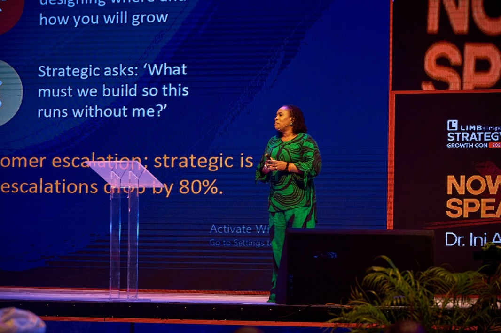

25 years. Multiple sectors. One mission: governance that actually works.— Ini Abimbola, DBA | Governance & Institutional Reform Advisor
Stanford Fellow · DBA · 25+ Years
25 years reforming institutions, advising governments, and closing the gap between strategy and execution across Africa and beyond.
25 years. Multiple sectors. One mission: governance that actually works.— Ini Abimbola, DBA | Governance & Institutional Reform Advisor

Architecting decision rights, KPIs, and performance routines that close the gap between strategy and execution in complex government environments.
Explore this area →Establishing ESG structures, committee charters, and oversight frameworks that strengthen board effectiveness and regulatory readiness.
Explore this area →Designing monitoring & evaluation frameworks and adaptive learning systems for donor-funded and large-scale public programmes.
Explore this area →